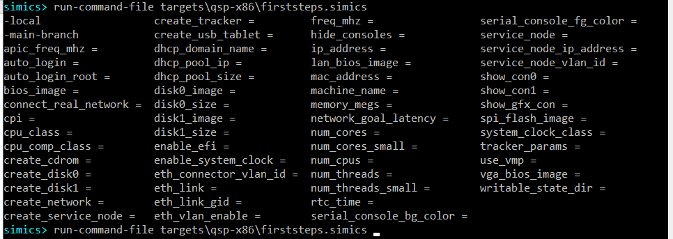
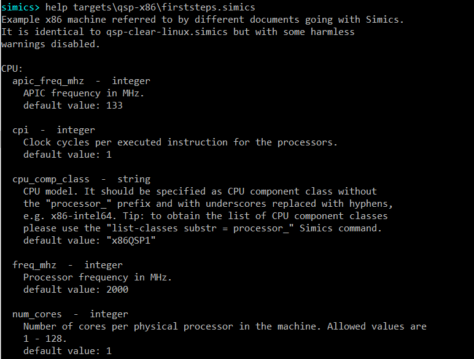
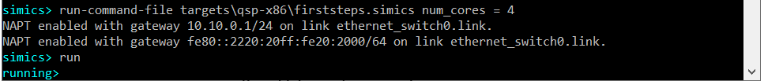
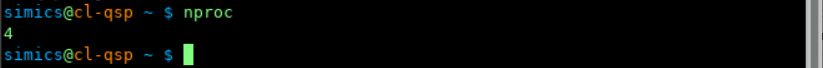

This section describes how to:
We assume that a user knows how to start Simics and how to get access to Simics CLI.
Simics scripts can accept parameters. In section 2.1 we created a target machine in Simics by executing the targets/qsp-x86/firststeps.simics script with Simics run-command-file command. This Simics script is written in a way that it can accept certain parameters.
There are a few ways to discover which parameters, if any, are accepted by the script:
To discover available parameters via command line completion, press the tab key twice after entering the run-command-file targets\qsp-x86\firststeps.simics string on the Simics CLI:
simics> run-command-file targets\qsp-x86\firststeps.simics <TAB><TAB>
As a result, Simics command line completion should show available parameters for the script:

Simics help command also allows to find out which parameters are accepted by a Simics script as well as to see documentation for the parameters. To discover available parameters for the targets\qsp-x86\firststeps.simics script just run this command:
simics> help targets\qsp-x86\firststeps.simics
As a result, script description will be printed together with a long list of accepted parameters. Here is the beginning of the output:

Let’s create a target machine with 4 cores per physical processor by setting the num_cores parameter to 4. To do that please run the following command:
simics> run-command-file targets\qsp-x86\firststeps.simics num_cores = 4
Now, start simulation be entering the run command:
simics> run

To check that the target machine indeed has 4 cores now, let’s check the number of processing units available on the target system. This can be done with the nproc command executed on the target system once Linux has booted: 